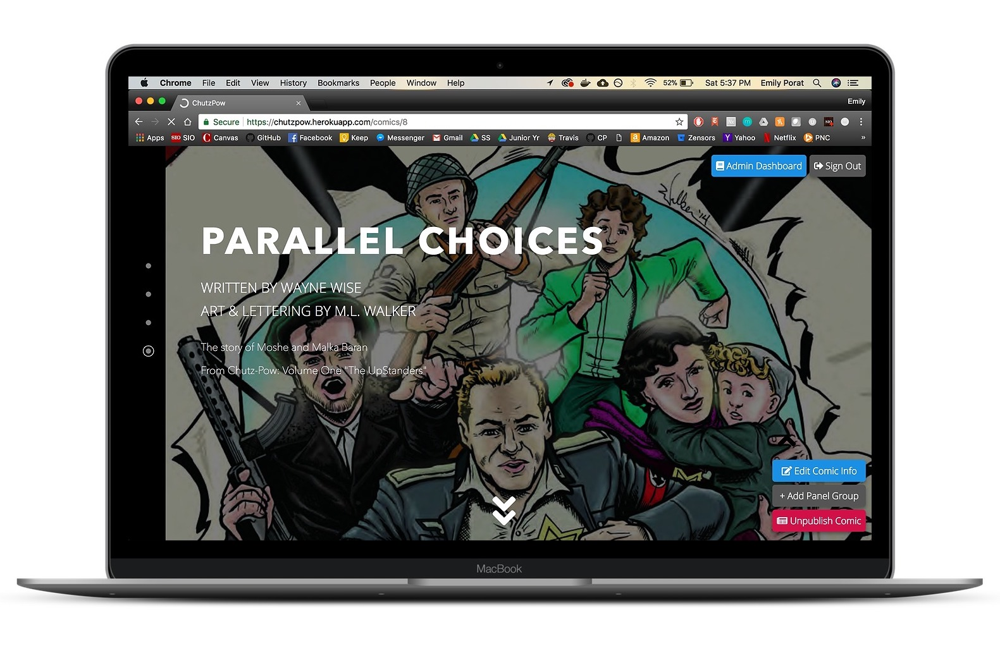
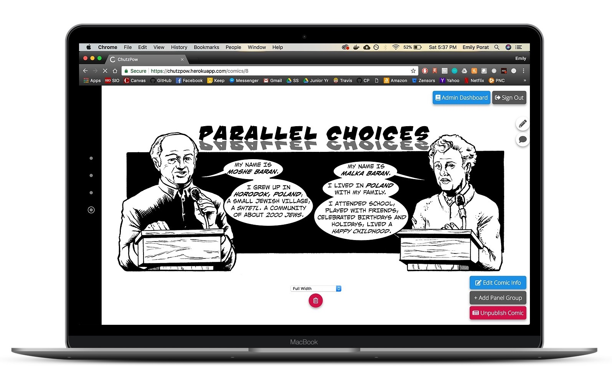
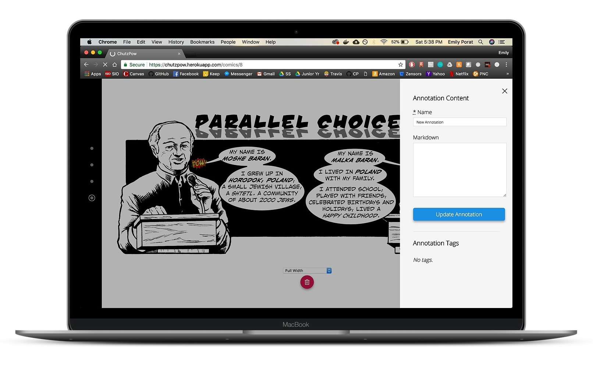
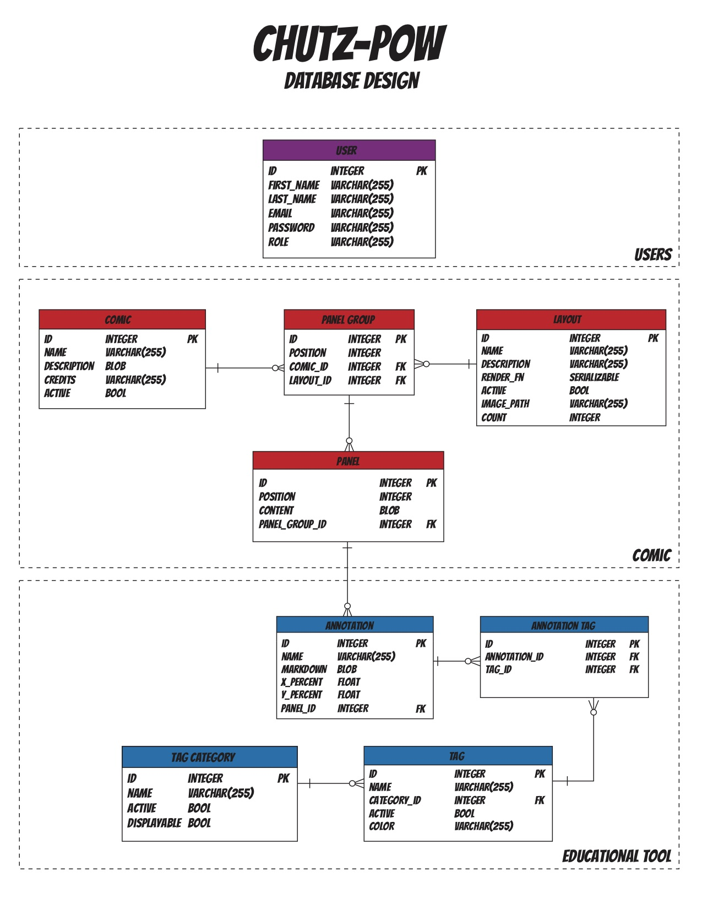

Spring 2018 | Information Systems Consulting Project | Website
Context
Every IS major takes the Information Systems Consulting Project course during their Junior Spring. Through this course, students design and implement a usable information system for a client. My team worked with The Holocaust Center of Pittsburgh.
Located in Greenfield, the Holocaust Center is a multi-purpose hub for education, events, art, and more. Its mission is to inspire engagement with the history of the Holocaust and to connect with it today.
The center provides sixteen different programs, ranging from speaker series to internships to short-term exhibits. Their visitors are mainly student groups who visit the center on eld trips as well as Holocaust survivors and the greater Jewish community.
Team
I worked with two other IS juniors: Kenny Cohen and Sean Park. I took on the role of UX Designer and Frontend Engineer, Kenny served as the scrum master and Full Stack Developer, and Sean was the designer of the platform’s structure and core experience as well as a Full Stack Developer
Skills
Building Client Relationships
Project Management
Agile Development Methodology
Wireframing
Prototyping
Development
Tools/Technology
Adobe XD
Ruby on Rails
HTML/CSS
JavaScript
Problem Statement
The Holocaust Center does not have a lack of programs; rather, they lack a platform to connect these programs and the physical space to carry out these programs.
They want students to be able to engage with the material before, during, and after their visit, and they want teachers to be able to explore different perspectives when teaching about the Holocaust. Additionally, the Holocaust Center wants to be a resource both for people who visit in-person but also for those who cannot visit at all.
Project Vision
The tool we developed allows users to engage with the stories of the Holocaust through an interactive, online version of Chutz-Pow, the Holocaust Center's very own comic book series. It will tie together all of the resources the Holocaust Center has to offer, providing a cohesive platform for learning and engagement.
Final Product
View the website here! Selected screens are below:

This is the title screen that admin users see.

The story view offers many opportunities for customization.

Users can create annotations with markdown, giving them the option to add headings, text, pictures, and more!
Process
Before discussing any sort of solution with the client, we first focused on building a relationship with them and understanding the problems they are facing. After gaining a deep understanding of what the Holocaust Center does, we learned that Holocaust survivor stories are the most impactful and personal ways to communicate the horrors of the Holocaust. Holocaust survivor stories are important to Holocaust education because it puts a face and a real life story to the people that lived through the cruelty of the Nazi regime. Furthermore, a major problem in the contemporary Holocaust education is the aging of Holocaust survivors where they are no longer able to tell their stories and share their experiences with the world. To address this issue, the Center created Chutz-Pow, a comic book series, to tell the stories of Holocaust survivors with a younger audience in mind.
Given the professional standard, historical accuracy and interactiveness of the series, “digitizing” this project was the perfect focus for an engaging and innovative educational platform that is unique to the Holocaust Center of Pittsburgh.
We then delivered a proposal to the client:
The tool we are proposing to develop allows users to engage with the stories of the Holocaust through an interactive, online version of Chutz-Pow. It will tie together all of the resources the Holocaust Center has to offer, providing a cohesive platform for learning and engagement. This platform will showcase the unique value of Chutz-Pow and allow students from all over the world to engage with Holocaust stories on a personal level. The platform we build will provide a streamlined user experience for the staff; adding resources (images, video clips, text, etc.) and uploading comic panels from Chutz-Pow will be a quick and easy process.
Currently, most archives of Holocaust Survivor stories are not user friendly, and feel like they are just an interface for dealing with a database. The tool we are proposing makes every step of the process a user-friendly, thought-provoking experience, whether it is for the staff members uploading content or the readers.
We plan to use modern web technologies to create an easy to use tool to develop responsive web pages telling the story of Holocaust Survivors through Chutz-Pow. The core principle of the application is that the data and the view are separatedso that data can easily be added to the system and without any work on the users end, a beautifully crafted experience for a reader is prepared through our adaptive technologies.
We then developed an ambitious list of use cases; pink use cases were completed.
As a student, I want to...
Read stories about Holocaust survivors.
Filter stories based on theme.
Access external and internal resources that pertain to survivor stories.
Save my place in a story so I can come back to it later.
Make my own annotations regarding my thoughts or feelings on a given story or artifact.
As a teacher, I want to...
View the list of stories.
View the list of themes.
View the list of lessons for each topic.
View a teacher’s guide with each lesson. - Annotate lessons with my own notes.
As a visitor...
Before I visit, I would like to get a preview of the artifacts on display.
During my visit, I would like to read more about artifacts using my phone in case the text is too small or there are too many people crowding around.
After my visit, I would like to read more about the artifacts I saw during my visit.
I would like to provide feedback or reflections after the visit.
As a staff member, I want to be able to...
Create a new story
Edit a story.
Delete an story.
Add a comic strip to a story. - Add text to a story.
Connect an annotation to a part of a story. - Add a video to an annotation.
Add an image to an annotation.
Edit an annotation.
Delete an annotation.
Kenny took the lead on creating an Entity Relationship Diagram

Designing the interface was a multi-step, iterative process that started with a whiteboarding session.
This was the final screen design that came from that session.
From that sketch, I converted the wireframe to a basic digital version using Adobe XD.
I filled in some content and added styles.
This was the final wireframe.
We utilized the Agile development process throughout the semester to structure our work. We made use of Github issues as a product backlog and submitted weekly sprint reports to the client.